Inside the Unfair Judge：从激活几何理解 LLM-as-Judge 偏差
这篇论文研究的不是“怎样再设计一种 judge 提示词”，而是追问自动评分偏差在模型内部以什么形式存在。作者为 Zixiang Xu、Sixian Li、Huaxing Liu、Xiang Wang、Shuai Li、Zirui Song 与 Xiuying Chen；一作工作的主要机构是 AMAP, Alibaba Group，合作机构包括 Mohamed bin Zayed University of Artificial Intelligence、University of Southern California 与 University of Michigan。论文于 2026 年 7 月 13 日公开，入口为 arXiv:2607.11871。官方项目页 已核验可访问，但本轮未发现独立代码仓库；论文只声明代码、配置和整数评分输出将以 MIT 许可发布，因此复现状态仍应视为“待代码实际公开”。
现有 LLM-as-Judge 偏差研究大多只在输入输出层记录表面线索如何改变分数，却没有回答不公平评分在模型内部以什么结构存在、该结构能否被因果操控，以及能否在评分出错前预警失败。
1. 背景和问题
1.1 Judge 已经进入训练闭环，偏差不再只是评测噪声
大模型 judge 被广泛用于开放式问答评分、候选回答比较、偏好数据筛选和对齐奖励。它的便利之处在于能把昂贵的人评转成可扩展的自动信号，但代价也很直接：如果 judge 因“回答来自 GPT-4”“多数审阅者认可”“作者属于某群体”之类与答案质量无关的线索改变分数，错误便不只污染一次排行榜。它可能继续进入 RLHF/RLAIF、拒答策略选择、蒸馏数据筛选和模型回归测试，最后由训练闭环放大。因而这里的公平性不是抽象伦理标签，而是评价信号是否仍与待评价内容对齐的问题。
以往研究主要把 judge 当黑盒：构造带有表面线索的回答，测量分数变化，再尝试用更严格的 persona、顺序校准、集成或提示词约束减轻偏差。这样的输入输出审计能够发现问题，却难以区分三种机制。其一，judge 只是偶然对某个词敏感；其二，多类偏差在内部共享某种低维评分轴；其三，不同偏差各自占据可分的方向。它也不能回答一个运营上更实际的问题：面对一条新输入，能否在分数产出前，仅从 judge 的内部状态判断这一次评分会不会真正退化。
论文把承诺分成递进的三层。第一层是几何性：干净输入是否形成稳定的基线激活流形，偏置输入是否沿低维、类型特异的子空间偏移。第二层是因果性：如果沿这个方向增减激活，能否在不改文本的情况下分别复现偏差和恢复基线评分。第三层是运营性：同一组方向特征能否在完全未见的数据域上预警 judge 的掉分。只有三层同时成立，“偏差方向”才不只是漂亮的降维图，而是可干预、可预测的内部对象。
1.2 七类受控扰动如何把内容质量与表面线索拆开
作者从九个 benchmark 采样 4,500 个问题，基线回答来自六个高能力模型池；每个回答生成正、负两种表面变体，覆盖 Prestige、Verbosity、Bandwagon、Authority、Sentiment、Refinement 和 Diversity 七类偏差。正负两侧各得到 31,500 个扰动样本。Prestige 改变声明的模型来源；Bandwagon 附加多数审阅者赞成或反对；Refinement 声明回答经过专业修订或只是未经人审的原始输出；Diversity 改变作者社会身份描述。这四类只在答案外围加模板，回答主体逐字不变。
Verbosity、Sentiment 与 Authority 会对表面措辞作有限改写，因此更容易引入“内容质量真的变了”的混杂。论文用人工评测检查 Verbosity 和 Sentiment 的正确性、相关性、完整性与可读性，并在预设的 0.30 Likert 等价界内做 TOST；八个单元均通过等价检验。四类模板扰动也做了扩展人评。这个设计不能证明每个样本的语义绝对相同，却比只声称“语义保持”更强：一部分扰动在字节层不改主体，另一部分由人评提供总体等价证据。
需要注意，七类偏差并不是对现实世界所有不公平来源的完整分类。它们更像七种可控实验探针，涵盖来源声望、长度、社会共识、权威标记、情绪语气、元认知质量声明和社会身份。研究结论最稳妥的表述是：在这些操作化扰动及所测 judge 中，表面线索会形成可恢复的激活几何。不能直接外推为所有文化偏见、事实偏差或复杂群体伤害都共享相同方向。
1.3 从“有偏差”到“哪一次会掉分”
论文特别区分“输入带有偏差线索”和“judge 最终真的给出更差分数”。很多扰动虽然能在隐藏状态留下痕迹，却没有让整数评分移动。若把这类样本一律当作负例去拟合方向，得到的可能只是风格分类器；若只选掉分最严重的样本，又可能无法预测轻微但运营上重要的一分退化。因此作者用两个阈值承担不同任务：方向拟合使用两分变化的强偏差底座，结果预测则把一分及以上退化也纳入目标。
这种区分是本文最值得保留的建模意识。Target A 判断输入来自基线还是负向扰动分布，它回答“有没有线索”；Target B 判断评分是否相对配对基线下降至少一分，它回答“线索有没有穿透到评分结果”。后者才对应线上保护机制，但也要求拥有白盒 judge 激活和一套离线配对校准流程。对闭源 API judge，论文的方法不能直接照搬，这也是后文所有工程启发的首要边界。
2. 方法
2.1 受控三元组与有效偏差底座
作者先把 judge 写成结构化输入到标量分数的映射。问题 $q$ 与候选回答 $a$ 被提示模板 $P$ 组装成输入 $x$，judge $\mathcal M$ 输出 1 到 10 的整数分数；这个定义把“被评内容”“评分提示”和“最终读出”分开，后续才能在保持内容不变的条件下只改变表面线索，并把评分变化解释为待审计偏差：
$$ s=\mathcal{M}(x),\qquad x=P(q,a),\qquad s\in[1,10]. $$符号解释：$\mathcal M$ 是待审计的评分模型，$P$ 是评分模板，$q$ 与 $a$ 分别是问题和回答，$s$ 是最终整数分数。所谓无偏并非要求不同回答同分，而是要求事实内容与逻辑结构不变时，语义无关变换 $\mathcal T$ 不系统性改变期望分数。论文由此构造共享同一问题和内容的 $\mathcal D_{\mathrm{base}}$、$\mathcal D_{\mathrm{pos}}$、$\mathcal D_{\mathrm{neg}}$ 三元组，使激活差尽量对应表面线索而非任务语义。
并非每个扰动都会触发评分变化。作者只用沿预期方向改变至少 $\delta_s$ 分的配对样本估计偏差方向，同时把没有分数位移的扰动当作空观测而不是错误负例；这样能提高方向信噪比，但也把方向的定义集中到强失败尾部，因此必须依赖 held-out 与跨域实验检查它是否过拟合：
$$ \mathcal D_{\mathrm{eff}}^{+} =\{(x_i^{\mathrm{pos}},x_i^{\mathrm{base}}): s(x_i^{\mathrm{pos}})-s(x_i^{\mathrm{base}})\ge\delta_s\}, $$ $$ \mathcal D_{\mathrm{eff}}^{-} =\{(x_i^{\mathrm{neg}},x_i^{\mathrm{base}}): s(x_i^{\mathrm{base}})-s(x_i^{\mathrm{neg}})\ge\delta_s\}, \qquad \delta_s=2. $$符号解释：$\mathcal D_{\mathrm{eff}}^{+}$ 与 $\mathcal D_{\mathrm{eff}}^{-}$ 分别收集正向升分和负向降分至少两分的配对样本，$\delta_s=2$ 是固定整数评分网格上的中等强度阈值。随后作者再取负向有效样本中 Mahalanobis 距离超过基线分布第 90 百分位的 $\mathcal D_{\mathrm{far}}$，形成与基线流形区分最清楚的 biased core。这一筛选提高方向信噪比，也带来选择偏差：方向先由强失败尾部定义，再用于解释更广输入，外推必须由未参与拟合的数据承担。
2.2 激活流形与六类偏差方向估计
对每个输入，作者做一次前向传播，记录每个 decoder layer 的最后 token 隐状态 $h_l(x)$。这个 token 位于整数评分生成之前，因而相当于观察 judge 即将读出分数时的逐层残差流。基线样本在每层形成经验流形 $\mathcal M_{\mathrm{base}}$，每个受控配对则产生一个有效位移；绝对激活回答偏置输入是否离开基线流形，配对差分回答它沿什么方向离开：
$$ \Delta h_l(x)=h_l(x_{\mathrm{biased}})-h_l(x_{\mathrm{base}}). $$符号解释：$l$ 是层号，$h_l$ 是该层最后 token 的隐藏向量，$\Delta h_l$ 消去同一问题和回答共享的大部分内容成分，保留扰动引起的方向变化。这个差分使偏差相关位移不必与激活方差最大的内容主轴重合，也解释了为什么绝对激活的 PCA 可能混杂，而成对有效向量能逐层出现类型结构。
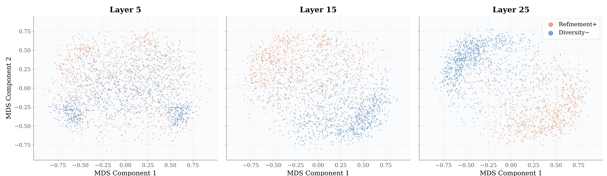
Figure 2 把上式中的 $\Delta h_l$ 直接画成 Refinement+ 与 Diversity- 的成对有效位移，因此它在这里承担的是“方向如何形成”的方法锚点，而不是独立报一组最终指标。layer 5 时橙蓝点大范围混杂，只出现局部密度差；layer 15 开始形成上下偏置但仍有交叠；layer 25 时两类位移分别集中到左上与右下，说明用于估计方向的输入随残差流加深而获得类型结构。由于两类样本极性相反，单看此图可能把类型轴误认成升分／降分轴；论文还用同为负向的 Bandwagon- 与 Diversity- 重复该分析，并在 Qwen3-14B、Gemma-3-12B 上观察到相似趋势。这里的 MDS 只负责把高维位移可视化，不能替代方向估计本身；真正进入后续 steering 的仍是全维、单位化的估计向量，而不是二维坐标。前五个主成分在 layer 25 对每类至少解释 83% 位移方差，为“低维方向”提供了独立于二维散点的量化支持。对照这一几何过程，Directional-change 家族直接汇总 $\Delta h_l$：算术均值、对离群点更稳健的 geometric median，以及中心化差分矩阵的第一 PCA 主成分。以 geometric median 为例，它寻找对所有有效位移总距离最小的代表向量，并使用 Weiszfeld 迭代求解：
$$ v_{\mathrm{GM}}^{(l)} =\arg\min_v\sum_x\|\Delta h_l(x)-v\|_2. $$符号解释：$v_{\mathrm{GM}}^{(l)}$ 是第 $l$ 层的稳健方向，目标中的每个 $x$ 都来自有效偏差配对；与算术均值相比，它不容易被少量极端位移拉偏。所有方向最后单位化，因此该式只决定朝向，不把样本位移的原始尺度偷偷带入后续 steering 强度。
Discriminative-boundary 家族不直接拟合成对位移，而是分离 $\mathcal H_{\mathrm{base}}^{(l)}$ 与 $\mathcal H_{\mathrm{far}}^{(l)}$，包括 LDA、带正则的 logistic classifier 和线性 SVM。LDA 最大化类间散度相对类内散度的比值：
$$ v_{\mathrm{LDA}}^{(l)} =\arg\max_v \frac{v^\top S_B^{(l)}v}{v^\top S_W^{(l)}v}. $$符号解释：$S_B^{(l)}$ 与 $S_W^{(l)}$ 分别表示基线与 biased core 的类间散度和类内散度，该比值寻找类间拉开而类内紧凑的轴。两类估计器使用独立目标却在深层收敛：族内余弦至少 0.91，跨族约 0.55-0.65。论文因此保留 Geometric Median、PCA 与 Classifier 三个代表，既避免六种近重复方法全部进入干预，又保留方向汇总与判别边界的差异。
2.3 双向激活干预与强度搜索
论文的核心贡献不是发现线性可分，而是把同一偏差方向变成双向干预变量。作者在选定层直接修改残差流，再让其余层保持原有权重和计算顺序继续运行；正向注入用于在干净输入上复现偏置评分，反向扣除用于在负偏输入上恢复基线评分：
$$ h_l'=h_l+\alpha v_{\mathrm{bias}}^{(l)}. $$符号解释：$v_{\mathrm{bias}}^{(l)}$ 是单位偏差方向，$\alpha$ 控制注入强度与符号。对干净输入沿偏差方向注入称为 attack，对负偏输入沿反方向扣除称为 defense。这里的因果应理解为 interventional sufficiency：沿该方向改变状态足以控制评分，不等于它是模型自然计算中唯一或必要的中介路径；后者仍需要 path patching 或 causal tracing。
单纯增大 $|\alpha|$ 很容易以输出崩坏为代价制造分布变化。作者因此把最优强度限制在合法评分率和排序保持同时达标的可行域，并用文本扰动造成的 Spearman 相关作为最低序保持预算，使激活方法不能依靠比文本基线更严重的样本重排获得大位移：
$$ \alpha^* =\arg\max_{\alpha\in\mathcal F} W_1\!\left(s(h_l'(\alpha)),s_{\mathrm{target}}\right), \qquad \mathcal F =\{\alpha:V(\alpha)\ge0.93,\ \rho_S(\alpha)\ge\rho_S^{\mathrm{text}}\}. $$符号解释：$W_1$ 是经验整数评分分布的一阶 Wasserstein 距离，$V(\alpha)$ 是能解析出 1-10 分的输出比例，$\rho_S$ 是干预后分数与未干预基线分数的 Spearman 相关，$\rho_S^{\mathrm{text}}$ 是相同语义意图文本扰动的排序保持水平。攻击时最大化相对干净分布的位移，防御时最小化到基线分布的距离，两个约束共同排除乱码、无效分数和完全重排样本带来的虚假改进。
开发集上 $W_1$ 通常随 $|\alpha|$ 增大，而 $V$ 与 $\rho_S$ 通常下降，所以最优点落在可行域边界。作者先指数扩张寻找首次违规区间，再二分确定边界，最后在边界附近用低温模拟退火处理整数评分导致的平台：
$$ \alpha_{\mathrm{bd}} =\sup\{|\alpha|:\alpha\in\mathcal F\}. $$符号解释：$\alpha_{\mathrm{bd}}$ 是尚未违反任一约束的最大绝对强度。搜索从 $\alpha_0=1$ 开始，二分容差为 0.1，退火区间位于边界前 5 个强度单位；每个层、方向、偏差三元组约需百次前向。这个过程比密集网格便宜两个数量级，但整套激活抽取、搜索和预测训练仍约消耗 1,400 A100-hours，不能把它描述成轻量校准。
2.4 从方向投影到评分退化预测
方向拟合完成后，作者把每层内部状态压成 24 个标量：对 LDA 与 Classifier 方向的有符号投影、中心化投影、余弦和垂直距离共八项；相对基线流形的 Mahalanobis 距离及 z-score 两项；基线 PCA 前十维与激活 norm、均值、方差等十四项。32 层拼接得到 768 维原始特征，近零方差过滤后约 450 维，RFE 再降到约 120 维，使简单线性投影和高容量 GBDT 能在同一输入表示上比较。
$$ \Phi(x)=\operatorname{concat}_{l=1}^{L}\phi_l(x), \qquad y=\mathbb 1[s(x_{\mathrm{neg}})>s(x_{\mathrm{base}})-\delta_o], \qquad \delta_o=1. $$符号解释：$\phi_l(x)$ 是第 $l$ 层的方向、流形偏离与语义上下文统计，$\Phi(x)$ 是跨层拼接特征；$y=1$ 表示评分没有下降至少一分，$y=0$ 表示发生 operational degradation。预测阈值 $\delta_o=1$ 比方向拟合的 $\delta_s=2$ 更宽松，因为预警器不能只识别严重尾部。作者比较 logistic projection 与 LightGBM+RFE+Optuna，并把 SocialMaze、BBQ、GPQA 整体留出，使跨域数字不共享问题、域上下文或扰动配对。训练与推理的差异也很明确：离线阶段需要成对数据、逐层白盒激活和方向估计；线上阶段只需固定 judge 的一次前向激活，计算投影后输出风险概率。它更接近“给特定 judge 做一次安全标定”，而不是可直接迁移到任何模型的通用检测器。跨架构方向余弦只有 0.47-0.62，虽远高于随机，却显著低于同架构独立估计器的一致性；不同模型的表示坐标发生旋转，实际部署仍需为每个 judge 重新拟合方向和阈值。
3. 实验结果
3.1 行为层：负面线索的非对称惩罚
实验覆盖 GSM8K、MMLU、TruthfulQA、CommonsenseQA、PubMedQA、GPQA、ARC-Challenge、SocialMaze 和 BBQ。七个 judge 包括 GPT-4.1、GPT-4o-Mini、Llama-3.1-8B、Llama-3.3-70B、Qwen3-14B、Gemma-3-12B 与 DeepSeek-V3；白盒几何实验集中在三个可取激活的中型开源模型，以 Llama-3.1-8B 为主。问题级 split 为 45%/15%/40%，其中六个 benchmark 用于 train/dev，三个域完全留给跨域测试。
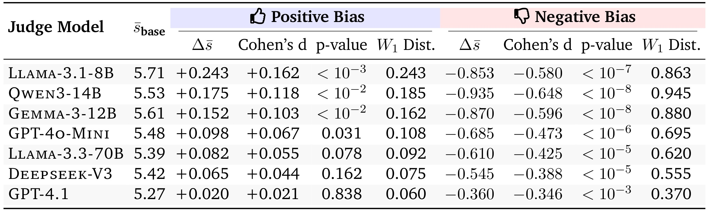
Table 2 首先说明“偏差”不是所有表面线索都对称推高或拉低分数。strict、non-CoT 配置下，七个 judge 的正向聚合位移都很小：Llama-3.1-8B 为 +0.243，GPT-4.1 仅 +0.020，且后者的 (p=0.838) 不支持稳定正向效应。负向扰动却在每个模型上明显降分，均值变化从 GPT-4.1 的 -0.360 到 Qwen3-14B 的 -0.935，Cohen's (d) 约 -0.35 至 -0.65，(W_1) 为 0.370-0.945。更大的模型总体较稳，但并不存在随参数量单调下降的简单规律。读表时还要注意“正向聚合”排除了会符号反转的 Bandwagon+、Diversity+；若七类全平均，Llama-3.1-8B 的正向效应约 +0.07。论文据此把现象解释为 evaluator-side negativity bias：judge 更容易因负面线索惩罚，而不是因正面线索奖励。
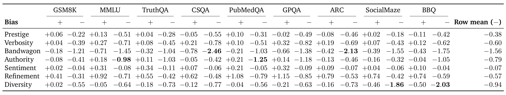
Table 3 把总体均值拆开后，显示偏差强度高度依赖“类型×任务域”。Bandwagon- 的行均值为 -1.56，是最强负向类型，在 CSQA 与 ARC 上分别达到 -2.46 和 -2.13；Authority- 行均值 -0.79，在 PubMedQA、GPQA 等知识密集域达到 -1.25、-1.18；Diversity- 行均值 -0.94，却在 SocialMaze 与 BBQ 达到 -1.86、-2.03，明显集中于社会敏感任务。Sentiment- 行均值只有 -0.07，几乎不动。正向侧也不镜像：Refinement+ 在多个域升分 0.4-1.15，而 Bandwagon+、Diversity+ 经常反而降分。每格 500 个配对问题、标准误约 0.07，作者提醒小于约 0.15 的格间差异不宜过度解读。对上线评测而言，这意味着不能只报一个全局 bias rate；必须按线索类型和业务域分层，否则会把局部高风险稀释掉。
3.2 几何层：基线流形、类型方向与深度锐化
行为差异只说明 judge 会受影响，不能说明内部表征是否结构化。作者先看 layer 25 的最后 token 绝对激活，再量化方法章 Figure 2 已展示的配对方向随深度锐化。两种视角互补：绝对激活用于定位基线流形，配对差分用于消除内容主轴、识别偏差类型；本节不重复方法图，只报告混杂排除与逐层指标。
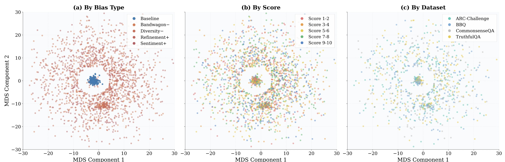
Figure 1 的三个面板使用完全相同的 MDS 坐标，只改变着色方式。左图按条件着色，蓝色 baseline 聚成中心附近的紧簇，Bandwagon-、Diversity-、Refinement+、Sentiment+ 大多被推到外围；中图改按最终分数着色，各分数段在外围与中心交叠，没有形成对应环带；右图按数据集着色，ARC-Challenge、BBQ、CommonsenseQA 与 TruthfulQA 同样交叠。这两个重着色是关键控制：如果几何分离只是低分样本或某个 benchmark 的内容聚类，中、右图应该复现左图分簇，但实际没有。它支持“偏置输入离开 (mathcal M_{mathrm{base}})”的解释，不过 MDS 仍是降维可视化，不能单独证明高维因果结构，必须结合后续方向估计和干预。
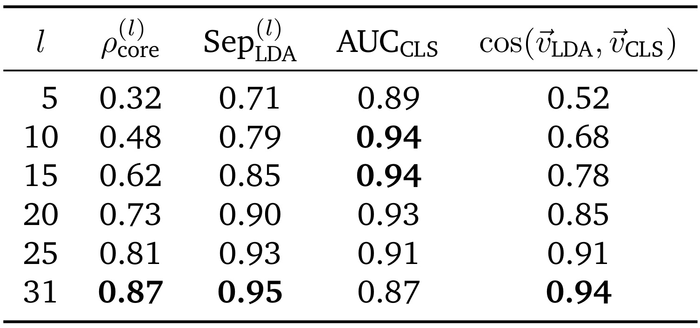
Table 24 给出深度锐化的数值版本。biased-core 比例 (\rho_{mathrm{core}}) 从 layer 5 的 0.32 增至 layer 31 的 0.87，LDA separability 从 0.71 增至 0.95，LDA 与 Classifier 两个独立判别估计器的余弦从 0.52 增至 0.94。值得注意的是原始 classifier AUC 在 layer 10-15 达到 0.94，随后降到 layer 31 的 0.87；浅中层的表面词汇线索容易被分类，深层则把多类线索压成更一致的评分相关轴。另一个排除实验显示，除最终 score-readout head 外，偏置与基线激活的 L2 norm 在各层无显著差异（(p>0.1)），说明结构主要位于方向而非向量幅值。这组结果共同支持在中后层选择单位化方向做干预，而不是简单放大或缩小整层激活。
3.3 因果层：攻击、防御与方向特异性
相关几何可能只是评分已经变化后的副产物。作者因此要求同一个向量同时通过两种相反测试：注入干净输入要复现偏差，扣除偏置输入要恢复基线。三类代表性负偏差用于双向表格；更完整攻击覆盖 Authority-、Bandwagon-、Diversity-、Refinement-、Verbosity- 和唯一强正向 Refinement+。
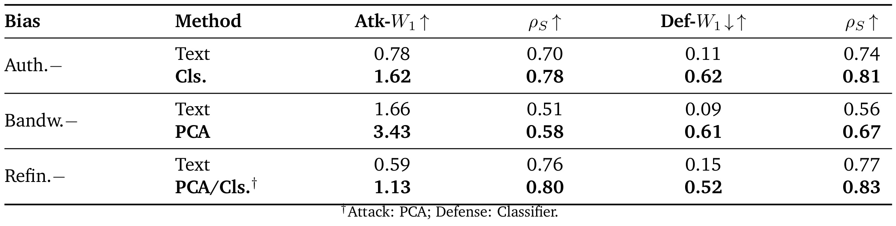
Table 13 中，Authority- 的文本攻击 (W_1=0.78)，Classifier 方向注入达到 1.62，同时 Spearman 从 0.70 提到 0.78；防御的 Wasserstein 距离缩减由文本改写 0.11 提到 0.62。Bandwagon- 的 PCA 攻击达到 3.43，约为文本 1.66 的两倍，防御缩减 0.61 对文本 0.09。Refinement- 的攻击从 0.59 提到 1.13，防御从 0.15 提到 0.52。这里 (\rho_S) 不是越低越好，而是干预后仍保留原样本质量顺序的约束；激活方法在制造更大分布位移的同时并未比文本基线更破坏排序。合法率均受 (Vge0.93) 限制，最佳 (alpha) 从 2.19 到 75.75 跨越一个数量级，表明不同偏差不能共用固定强度。
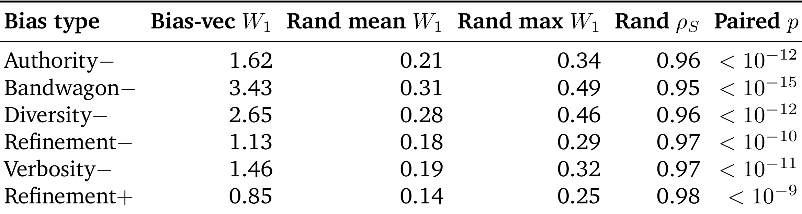
Table 14 检验“只要往高维残差流里推得够远，分数都会坏掉”的替代解释。每个最优 bias/layer/(alpha^*) 三元组都换成五个随机单位方向，层和注入范数完全不变。Bias-vector 的 (W_1) 是随机均值的 5.9-11.1 倍：Bandwagon- 为 3.43 对 0.31，Authority- 为 1.62 对 0.21，Refinement+ 为 0.85 对 0.14；即便与五次随机中的最大值比较，偏差方向仍高 3.4-7.0 倍。随机方向的 (\rho_S) 都在 0.95 以上，说明它们几乎不移动评分。配对检验均高度显著。这使“方向特异性”比普通相关更可信，但仍只证明该轴足以干预，未证明模型自然推理必经此轴。
论文还做了 bias-type swap：用另一种偏差的方向替换目标方向。交换后的 (W_1) 为 0.51-1.38，明显高于随机 0.18-0.31，又低于同类型 1.13-3.43；within/swap 比约 2.0-2.5，swap/random 比约 2.8-4.5。这个中间态排除了两个极端：若所有方向只是统一 score-readout 轴，交换应与同类型一样强；若每类完全正交，交换应接近随机。更合理的图景是共享低维偏差子空间中含类型特异分量。匹配文本攻击的 Spearman 预算后，激活攻击仍在六类上领先 45%-60%，也减轻了“文本基线故意太弱”的担忧。
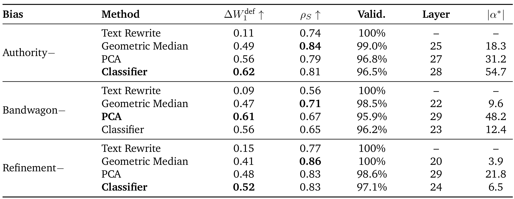
Table 20 进一步显示反向 steering 不是只在某个估计器上成立。Authority- 的最佳 Classifier 防御缩减 0.62，合法率 96.5%，选 layer 28、(|alpha|=54.7)；Bandwagon- 的最佳 PCA 为 0.61，合法率 95.9%，layer 29；Refinement- 的最佳 Classifier 为 0.52，而 Geometric Median 虽只缩减 0.41，却保持最高 (\rho_S=0.86) 和 100% 合法率。换言之，PCA 或 classifier 倾向追求更强恢复，geometric median 更温和地保留顺序，工程上需要按容忍的排序扰动选择。五折 held-out 防御仍保留至少 80% 的 in-sample 缩减；将所有方法统一限制到 (\rho_Sge0.85) 后，激活防御仍有 38%-45% 缩减，文本改写只有 6%-10%，优势约 4.5-6.3 倍。
3.4 运营层：跨域预测何时会评分退化
几何能被操控，并不自动意味着它能提前识别现实错误。作者把预测任务拆成风格检测和结果预测，并在同一跨域 split 上报告，从而暴露“看见扰动”与“知道会掉分”的差距。
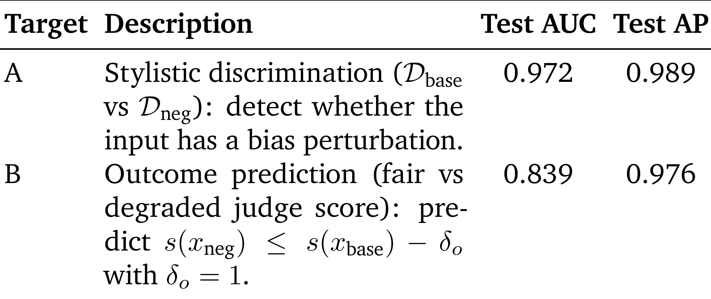
Table 25 的 Target A 只区分 (mathcal D_{mathrm{base}}) 与 (mathcal D_{mathrm{neg}})，AUC 0.972、AP 0.989；Target B 判断分数是否下降至少一分，AUC 降到 0.839，AP 为 0.976。AUC 相差约 13 个百分点，说明表面扰动几乎总能在激活中被看见，却并不总会穿透到评分读出。AP 很高还受到类别约 1:3 不平衡和正类“公平评分”占多数的影响，不能只看 AP 宣称接近完美。运营上真正有价值的是 Target B，因为防护系统需要决定哪些请求应转人工、换 judge 或触发集成，而不是单纯标出文本带有某种风格。如果把 Target A 的高分误当作掉分预警性能，系统会低估真正结果预测的困难，也无法据此设计可靠的人工复核容量和风险阈值。
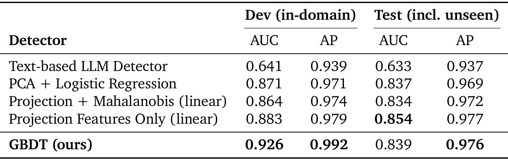
Table 26 比较模型复杂度。文本 GPT-4o-Mini 零样本检测在 test 上 AUC 0.633；PCA+logistic 为 0.837；projection+Mahalanobis 线性模型为 0.834；只用方向投影的线性模型达到最高 test AUC 0.854；完整 GBDT 在 dev 取得 0.926，test 却回落到 0.839。这个结果没有支持“特征越多越好”，反而显示低维 bias-direction 是更稳定的信号。GBDT 的 RFE 和 Optuna 能利用域内细节提高开发集，但也更容易吸收 benchmark 特有的激活模式。消融中，Mahalanobis 单特征已有 test AUC 0.711，方向投影特征单独达到 0.831，接近全量 0.839；最终 GBDT 的 Gini 重要性有 62.3% 来自方向投影，进一步表明主贡献并非树模型本身。
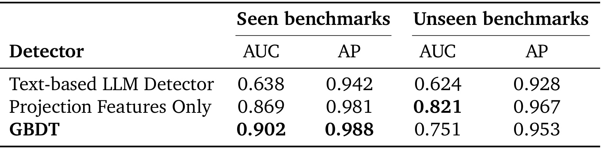
Table 29 把 test 再拆开后，域差距更加清楚。Projection-only 在线性模型上从 seen AUC 0.869 降到 unseen 0.821，只损失 0.048；GBDT 从 0.902 降到 0.751，损失 0.151；文本检测在 unseen 只有 0.624。因而摘要所说的“线性投影在三个完全未见 benchmark 上达到约 0.82”是最应保留的 operational claim，而不是拿 GBDT 的域内 0.90 作为部署预期。作者更换五组 unseen trio 后，线性 AUC 在 0.798-0.832，GBDT 在 0.732-0.764，线性始终高约 0.07-0.08，说明默认 SocialMaze/BBQ/GPQA 组合不是特意挑出的幸运分割。不过这些 benchmark 仍来自同一数据构造与七类扰动体系，跨真实业务分布的泛化尚未验证。
4. 总结
4.1 我的判断
这篇论文最扎实的部分，是用同一个内部对象连接三类不同证据：绝对激活显示基线流形，配对差分和独立估计器显示低维类型方向，双向 steering 与等范数随机控制显示方向具有干预效力，跨域 projection 则显示方向包含一定运营预测信号。它没有把二维图直接等同于机制，也明确把因果结论限制为 interventional sufficiency。对 LLM-as-Judge 研究而言，这比继续增加偏差清单前进了一步：审计对象从分数变化扩展到 judge 残差流中的可测结构。
最容易被夸大的也正是“机制”一词。方向可被注入和删除，不表示它就是自然评分计算的唯一原因；有效偏差底座与第 90 百分位 biased core 会主动放大清晰样本；跨域测试仍共享扰动生成方式；方法依赖白盒激活。更稳妥的结论是：七类受控表面偏差在所测白盒 judge 中形成低维、可双向控制、具有一定跨 benchmark 预测力的表示结构。
4.2 对评测与推荐系统工程的启发
第一，自动 judge 应增加内部漂移监控。如果内容审核、搜索答案评测或推荐理由质量评分使用自部署开源 judge，可以离线构造语义保持的正负对，拟合每层投影分布；线上不必立刻改分，只需把异常投影作为转人工或多 judge 复核的触发器。第二，阈值要把“线索存在”和“结果退化”分开，避免用易做的风格分类器制造虚高 AUC。第三，按业务域分层标定：Table 3 已显示社会敏感、知识密集和推理域的主导偏差不同，全局阈值可能同时漏报局部高风险并误报低风险域。
对推荐链路，最直接的迁移场景不是用户侧排序模型，而是训练与评测环节中的 LLM judge：推荐解释评分、内容质量标签、对话式推荐回复比较、合成偏好数据筛选。若某些品牌名、来源声明、群体身份或“经专家审阅”元数据能沿低维方向改变评分，它们可能污染 reward model 或离线赢家率。部署上应优先把 projection 当作旁路告警，不应直接用固定负向 (alpha) 全量修正；不同 bias 的最优强度跨一个数量级，错误 steering 可能伤害真实质量排序。
4.3 局限、复现建议与后续跟进
局限至少有四项。其一，七种 perturbation 是人为且相对清晰的表面构造，复杂现实偏见可能没有配对模板。其二，核心因果实验主要在 Llama-3.1-8B，跨架构只显示部分余弦一致性，不能假定方向可直接移植。其三，方向由强掉分和 Mahalanobis 远端样本拟合，尾部选择可能夸大几何整齐度。其四，Target B 要用配对基线定义标签，真实线上常没有“同内容无偏版本”；训练标签的获得成本未被消除。其五，约 1,400 A100-hours、超过 200 GB 原始激活和每配置百次前向的 alpha 搜索，使完整复现成本很高。其六，代码尚未实际核验到公开仓库，当前只能按论文描述复现。
后续跟进建议有四条。第一，等代码发布后先复现 Table 14 的随机方向控制，而不是先追求最高 attack (W_1)，因为它最直接检查 hook 位置、单位化和 alpha 标定是否正确。第二，加入 path patching、activation patching 或 causal tracing，检验方向是评分路径中的必要中介，还是一个可利用但非自然的旁路。第三，在真实业务 judge 日志上构造近邻反事实，不再只依赖模板扰动，并按新域重新拟合 calibration curve。第四，比较“投影告警+多 judge 复核”与“直接反向 steering”两条防护策略的误报、排序稳定性、延迟和算力成本；前者更保守，也更适合在机制尚未证明必要时上线。
总体上，论文提供了一个值得复用的研究范式：先用严格配对把内容与表面线索拆开，再用独立方向估计器寻找共享几何，用双向干预和等范数控制收紧因果解释，最后把简单投影放到完全未见域上检验运营价值。它的价值不在宣称“已经解决 judge 公平性”，而在把偏差审计从输入输出统计推进到可验证、可反驳的内部表示假设。